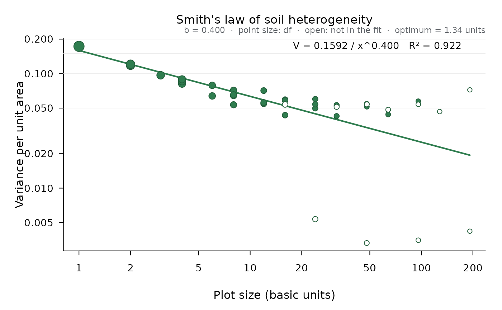

From a uniformity trial (one crop, uniformly managed, harvested in small
basic units) builds every plot shape that tiles the field exactly
(length units along the rows times width units along the columns),
computes for each the variance per unit area among plots,
V_x = var(T / x) with T the plot totals and x the plot size in basic
units, and fits Smith's empirical law V_x = V_1 / x^b by least squares
on the log scale (weighted by the degrees of freedom of each variance,
plots - 1, unless weights = "none").
Usage
smith_index(
data,
cost_ratio = NULL,
weights = c("df", "none"),
min_plots = 2,
strips = FALSE
)Arguments
- data
A numeric matrix (or data frame) of yields of the basic units, with the rows and columns of the field.
- cost_ratio
Optional ratio of the cost per plot to the cost per unit area of experimental land (both per basic unit).
- weights
"df"(default) or"none".- min_plots
Smallest number of plots a shape must give to enter the fit (at least 2).
- strips
Use in the fit the shapes that span the whole length or width of the field. They are left out by default (as in agricolae): one strip per row or column averages out any gradient along it, so a few such shapes can dominate the fit, and they cannot be blocked.
Value
An object of class "ad_smith" with the table of shapes
(table: size, width, length, plots, df, variance, cv, used), the index
b, the fitted V1, the R squared of the log-log fit, the mean yield,
the coefficient of variation of the basic units (cv1) and Smith's
optimum plot size (optimum).
Details
The index b lies usually between 0 and 1. Near 1, adjacent units are
nearly uncorrelated and larger plots reduce the variance per unit area
efficiently; near 0, adjacent units are much alike and enlarging plots
gains little, so more replicates pay off better. Given the ratio of the
cost per plot to the cost per unit area (cost_ratio = K1 / K2), Smith's
optimum plot size is b K1 / ((1 - b) K2) basic units; see
hatheway_size() for the size needed to detect a given difference.
References
Smith, H. F. (1938). An empirical law describing heterogeneity in the yields of agricultural crops. Journal of Agricultural Science 28, 1-23.
Gomez, K. A. and Gomez, A. A. (1984). Statistical Procedures for Agricultural Research, 2nd ed. Wiley, New York, chapter 12.
Examples
sm <- smith_index(uniformity_trial, cost_ratio = 2)
sm
#>
#> Smith's index of soil heterogeneity
#> Uniformity trial: 24 x 16 basic units, mean = 4.998, CV of the basic units = 8.32 %
#>
#> size width length plots df variance cv used
#> 1 1 1 384 383 0.173010 8.321 TRUE
#> 2 1 2 192 191 0.118250 6.880 TRUE
#> 2 2 1 192 191 0.120846 6.955 TRUE
#> 3 1 3 128 127 0.096731 6.222 TRUE
#> 4 1 4 96 95 0.081564 5.714 TRUE
#> 4 2 2 96 95 0.085626 5.854 TRUE
#> 4 4 1 96 95 0.089201 5.975 TRUE
#> 6 1 6 64 63 0.063830 5.054 TRUE
#> 6 2 3 64 63 0.079055 5.625 TRUE
#> 8 1 8 48 47 0.053451 4.625 TRUE
#> 8 2 4 48 47 0.064212 5.070 TRUE
#> 8 4 2 48 47 0.071609 5.354 TRUE
#> 8 8 1 48 47 0.065258 5.111 TRUE
#> 12 1 12 32 31 0.054553 4.673 TRUE
#> 12 2 6 32 31 0.055863 4.729 TRUE
#> 12 4 3 32 31 0.071087 5.334 TRUE
#> 16 2 8 24 23 0.043345 4.165 TRUE
#> 16 4 4 24 23 0.059299 4.872 TRUE
#> 16 8 2 24 23 0.058465 4.837 TRUE
#> 16 16 1 24 23 0.053755 4.638 FALSE
#> 24 1 24 16 15 0.005359 1.464 FALSE
#> 24 2 12 16 15 0.049709 4.460 TRUE
#> 24 4 6 16 15 0.053903 4.645 TRUE
#> 24 8 3 16 15 0.059940 4.898 TRUE
#> 32 4 8 12 11 0.042554 4.127 TRUE
#> 32 8 4 12 11 0.053080 4.609 TRUE
#> 32 16 2 12 11 0.051262 4.530 FALSE
#> 48 2 24 8 7 0.003315 1.152 FALSE
#> 48 4 12 8 7 0.051453 4.538 TRUE
#> 48 8 6 8 7 0.054437 4.668 TRUE
#> 48 16 3 8 7 0.053916 4.645 FALSE
#> 64 8 8 6 5 0.043974 4.195 TRUE
#> 64 16 4 6 5 0.048435 4.403 FALSE
#> 96 4 24 4 3 0.003507 1.185 FALSE
#> 96 8 12 4 3 0.057465 4.796 TRUE
#> 96 16 6 4 3 0.053906 4.645 FALSE
#> 128 16 8 3 2 0.046586 4.318 FALSE
#> 192 8 24 2 1 0.004206 1.297 FALSE
#> 192 16 12 2 1 0.072141 5.373 FALSE
#>
#> Fit of V_x = V_1 / x^b on the log scale (weighted by df, 28 shapes with 'used' TRUE; strips spanning the whole field left out):
#> V_1 = 0.1592, b = 0.4004, R-squared = 0.9219
#> Intermediate b: adjacent units are moderately correlated.
#> Optimum plot size (Smith, cost per plot / cost per unit area = 2): 1.335 basic units
plot(sm)
